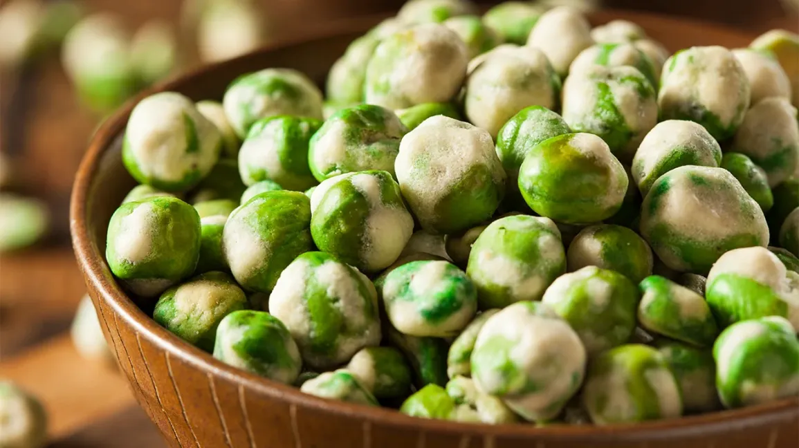

Wasabi green peas

Healthy, yummy homemade wasabi green peas with no additional starch and sugar.
ingredients
- 2 cups peas, frozen
- 2 teaspoons olive oil, divided
- 1 teaspoon wasabi paste
- 1 teaspoon matcha powder
steps
- Pre-heat oven to 350° F.
- Thaw frozen peas and let them rest on paper towels for about 15 min.
- Spread the peas in a single layer on a baking sheet lined with foil.
- Drizzle 1 tsp olive oil over peas and stir till well coated.
- Bake them for about 35-50 minutes.
- Stir every 10 min so that they all get roasted evenly.
- While peas are roasting, mix 1 tsp olive oil, wasabi paste and matcha together.
- When peas are roasted, remove from oven and coat with the matcha-wasabi paste. (The heat from the peas helps to soften the paste so peas get coated nicely.)
- Cool them completely and munch away!
This recipe was taken from https://groundgreentea.com/blog/homemade-wasabi-green-peas/
home